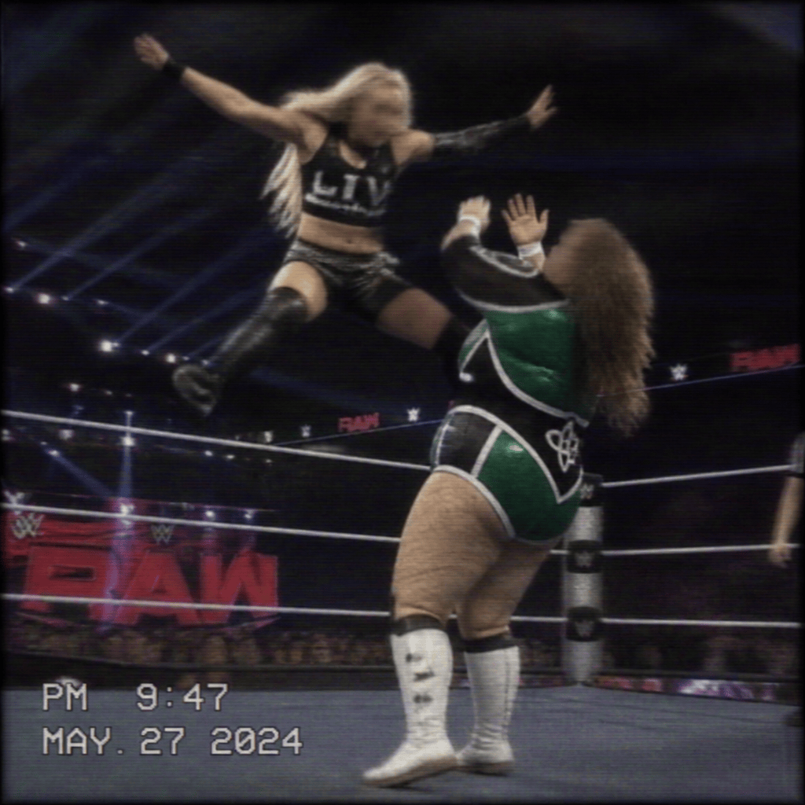

2026/11/08(日)
アベマ・試合結果速報！
○リヴ・モーガン (14分23秒 ローリングソープオペラ) パイパー・ニーヴェン●
○海野翔太 (12分17秒 シャイニングウィザー) 四代目タイガーマスク●
○ASUKA (18分45秒 アスカロック) キアナ・ジェームス●
○ナイア・ジャックス (20分10秒 バックブリーカー) マキシン・デュプリ●
○リア・リプリー (15分58秒 リプリーの反撃) アイビー・ナイル●
○ジェイド・カーギル (17分00秒 リンディングS) ティファニー・ストラットン●
○スカーレット (13分30秒 スカーレット・スマッシュ) パイパー・ニーヴェン●
○永田裕志 (22分05秒 フロッグスプラッシュ) ジョー・ゲイシー●
○アポロ・クルーズ (19分12秒 スピニング・ヒールキック) ブロンソン・リード●
○デクスター・ルミス (9分34秒 レクイエム) ジェイク・リー●
○ニッキー・クロス (16分27秒 クロスファイス) スカーレット●
○キアナ・ジェームス (21分49秒 ジャーマン・スープレックス) ナタリア●
Thank you for Watching !

「(リヴ・モーガン vs パイパー・ニーヴェン)」